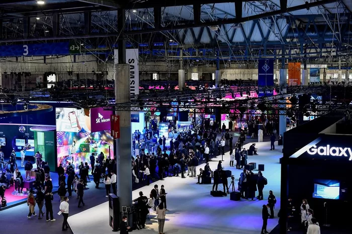

O que é a Programicon?
Programicon é um dos maiores eventos da area de TI na América do Sul criada por dois alunos que cursavam Ciencia da Computação na UFMG hoje se tornou um dos maiores eventos de programação e desenvolvimento!
Sobre os Criadores
Programações do Evento
-
Hackathons
Prepare-se para uma explosão de criatividade em um dia repleto de desafios e descobertas! Nosso Hackathon Relâmpago é a oportunidade perfeita para que mentes visionárias se unam, coloquem suas habilidades à prova e criem algo extraordinário em apenas 24 horas. Se você está pronto para uma experiência imersiva e transformadora, este é o evento que você não pode perder!
-
Feiras e Exposições
A feira de exposições imperdível para os entusiastas da programação! Navegue pelo futuro da tecnologia, mergulhando em demonstrações práticas de inovações de ponta. Conecte-se com líderes do setor, explore produtos revolucionários e aprimore suas habilidades em workshops especializados. A Programicon é mais do que uma feira; é uma experiência única para explorar o que há de mais atual na programação. Garanta seu lugar para uma jornada inspiradora e repleta de descobertas! #Programicon #FeiraDeExposicoes #ProgramacaoInovadora
-
Lançamentos e Anúncios
Nosso evento conta com uma programação de anúncios inéditos sobre a área de programação, tecnologia e inovação de diversos produtos relacionados à área tecnológica.
E muito mais!
Convidados
-
Tim Berners-Lee
Conhecido como o inventor da World Wide Web, Tim Berners-Lee tem uma perspectiva única sobre o desenvolvimento da internet e seu impacto na sociedade. Sua presença seria inestimável para discutir o futuro da web, proteção de dados e a evolução da conectividade global.
-
Mitchell Baker
Presidente-executiva da Mozilla, Mitchell Baker é uma defensora do software de código aberto e da privacidade na internet. Sua experiência seria crucial para discutir questões éticas relacionadas à tecnologia, além de explorar o papel das organizações na promoção de um ambiente online seguro e aberto.
-
Marissa Mayer
Ex-CEO do Yahoo! e atualmente investidora e empreendedora, Marissa Mayer traz uma rica experiência no setor de tecnologia. Sua visão sobre inovação, liderança feminina na tecnologia e estratégias para impulsionar o crescimento de empresas tecnológicas seria inspiradora para os participantes do evento.
Participação Especial
Gustavo Guanabara
Estamos entusiasmados em anunciar Gustavo Guanabara como nosso convidado especial na Programicon! Renomado professor e empreendedor na área de tecnologia, Guanabara traz consigo uma rica experiência em educação online, tornando a programação acessível a uma vasta audiência. Sua palestra, permeada por uma abordagem didática única e descontraída, promete oferecer insights valiosos sobre as tendências atuais na programação e estratégias práticas para o desenvolvimento de habilidades tecnológicas. Junte-se a nós para uma jornada inspiradora e educativa com Gustavo Guanabara na Programicon, onde a excelência em programação encontra a paixão pelo aprendizado!
local do Evento
São Paulo Expo. Endereço: Rodovia dos Imigrantes, km 1,5 CEP: 04329-900 São Paulo SP
Patrocionadores